Great Moments From Shakespeare
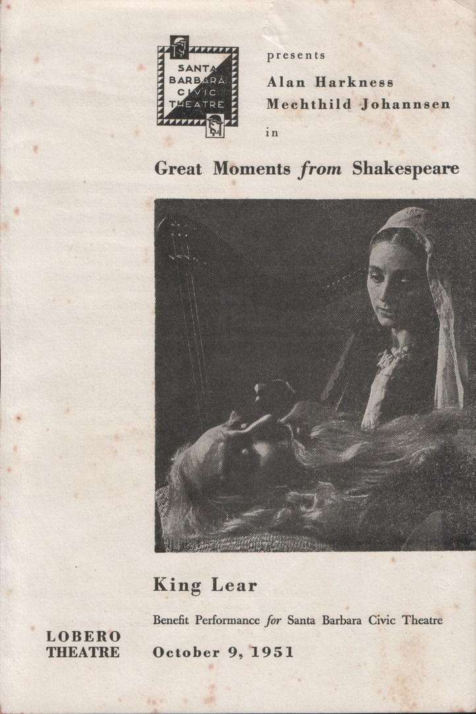
Programme for the Lobero Theatre benefit performance of King Lear, 9 October 1951 Read the clipping text (OCR)
SANT, BARBARA CIViC THEATRE presents Alan Harkness Mechthild Johannsen in Great Moments from Shakespeare ' LOBERO THEATRE King Lear Benefit Performance for Santa Barbara Civic Theatre October 9, 1951
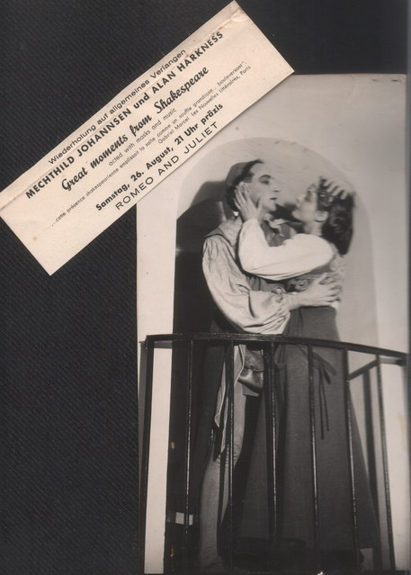
Programme (in German) for a repeat performance of Romeo and Juliet Read the clipping text (OCR)
Wiederholung auf allgemeines Verlangen MECHTHILD JOHANNSEN und ALAN HARKNESS* Great moments from Shakespeare ne sagónos la sole comma pa solle grandiose. Samstag, 26. August, 21 Uhr präzis ROMEO AND JULIET
Images from Romeo and Juliet
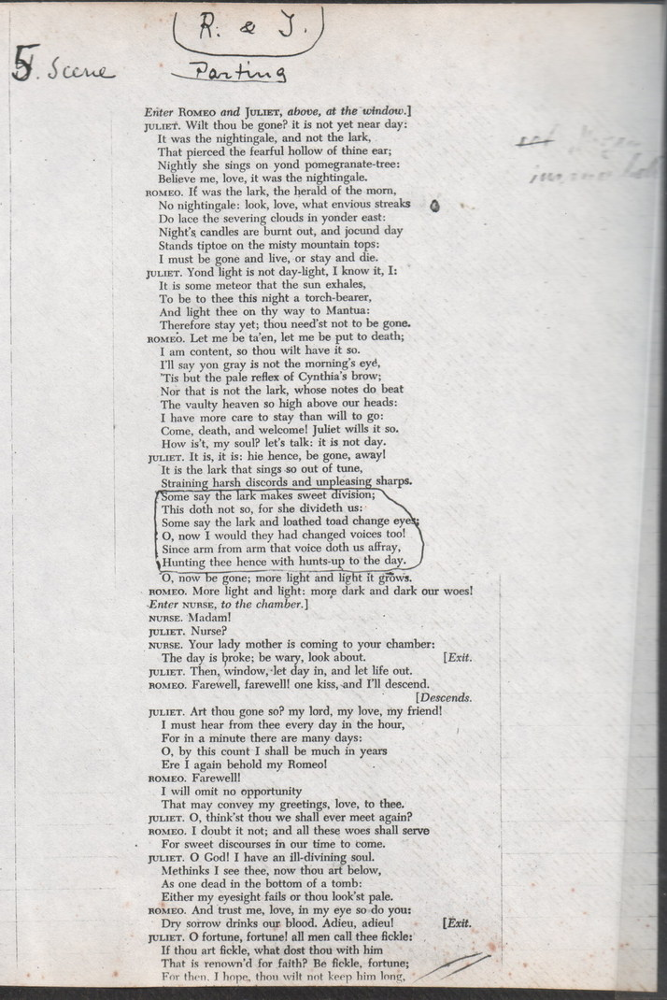
The parting scene (Act III, scene v) Read the clipping text (OCR)
5 Scene R&J Parting Enter Romeo and JuLieT, above, at the window.] jULIet. Wilt thou be gone? it is not yet near day: It was the nightingale, and not the lark, That pierced the fearful hollow of thine ear; Nightly she sings on yond pomegranate-tree: Believe me, love, it was the nightingale. ROMEO. It was the lark, the herald of the morn, No nightingale: look, love, what envious streaks Do lace the severing clouds in yonder east: Night's candles are burnt out, and jocund day Stands tiptoe on the misty mountain tops: I must be gone and live, or stay and die. jULIET. Yond light is not day-light, I know it, I: It is some meteor that the sun exhales, To be to thee this night a torch-bearer, And light thee on thy way to Mantua: Therefore stay yet; thou need'st not to be gone. ROMEO. Let me be ta'en, let me be put to death; I am content, so thou wilt have it so. I'll say yon gray is not the morning's eyd, 'Tis but the pale reflex of Cynthia's brow; Nor that is not the lark, whose notes do beat The vaulty heaven so high above our heads: I have more care to stay than will to go: Come, death, and welcome! Juliet wills it so. How is't, my soul? let's talk: it is not day. jULIET. It is, it is: hie hence, be gone, away! It is the lark that sings so out of tune, Straining harsh discords and unpleasing sharps. Some say the lark makes sweet division; This doth not so, for she divideth us: Some say the lark and loathed toad change eyes O, now I would they had changed voices too! Since arm from arm that voice doth us affray, Hunting thee hence with hunts-up to the day. O, now be gone; more light and light it grows. ROMEO. More light and light: more dark and dark our woes! Enter nuRse, to the chamber. NURSE. Madam! jULIET. Nurse? NURSE. Your lady mother is coming to your chamber: The day is broke; be wary, look about. jULIET. Then, window, let day in, and let life out. [Exit. ROMEO. Farewell, farewell! one kiss, and I'll descend. [Descends. JULIET. Art thou gone so? my lord, my love, my friend! I must hear from thee every day in the hour, For in a minute there are many days: O, by this count I shall be much in years Ere I again behold my Romeo! ROMEO. Farewell! I will omit no opportunity That may convey my greetings, love, to thee. JULIET. O, think'st thou we shall ever meet again? ROMEO. I doubt it not; and all these woes shall serve For sweet discourses in our time to come. JULIET. O God! I have an ill-divining soul. Methinks I see thee, now thou art below, As one dead in the bottom of a tomb: Either my eyesight fails or thou look'st pale. ROMEO. And trust me, love, in my eye so do you: Dry sorrow drinks our blood. Adieu, adieu! [Exit. JULIET. O fortune, fortunel all men call thee fickle: If thou art fickle, what dost thou with him That is renown'd for faith? Be fickle, fortune; For then. I hope, thou wilt not keep him long,
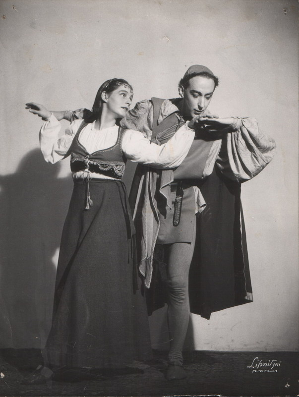
Romeo and Juliet 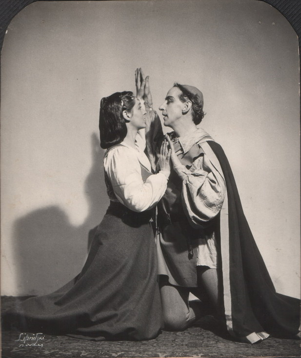
Romeo and Juliet
Images from King Lear
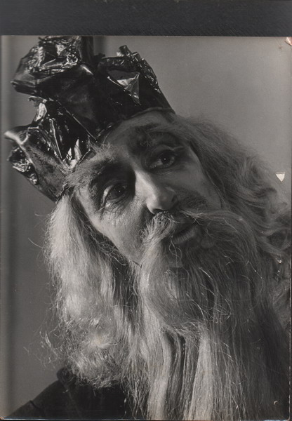
King Lear
Programme notes on the scenes performed:
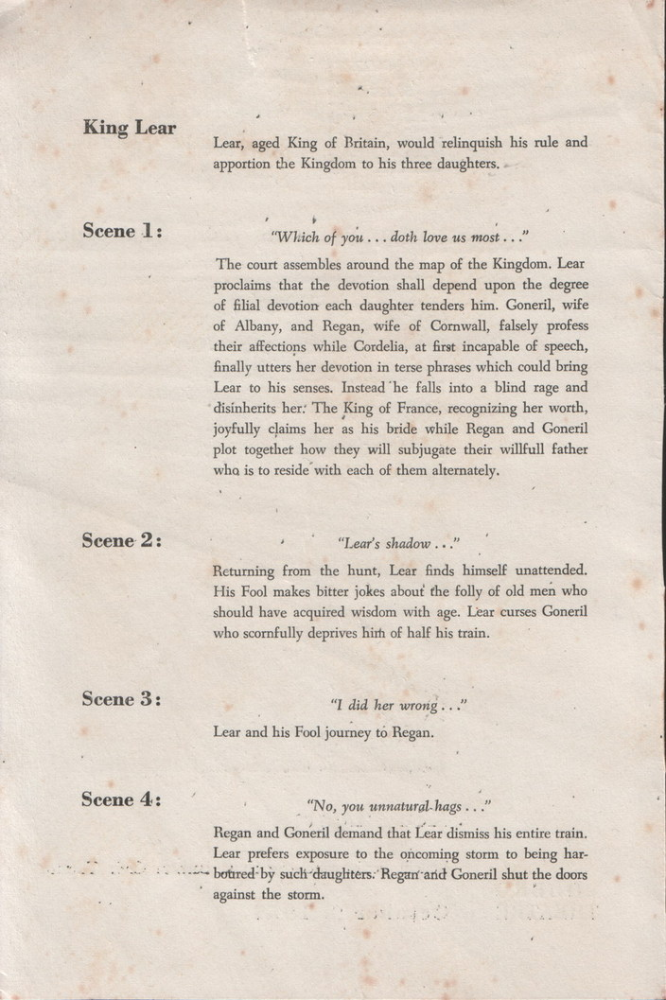
Programme notes: scenes 1–4 Read the clipping text (OCR)
King Lear Lear, aged King of Britain, would relinquish his rule and apportion the Kingdom to his three daughters. Scene 1: "Which of you ... doth love us most .. » The court assembles around the map of the Kingdom. Lear proclaims that the devotion shall depend upon the degree of filial devotion each daughter tenders him. Goneril, wife of Albany, and Regan, wife of Cornwall, falsely profess their affections while Cordelia, at first incapable of speech, finally utters her devotion in terse phrases which could bring Lear to his senses. Instead he falls into a blind rage and disinherits her: The King of France, recognizing her worth, joyfully claims her as his bride while Regan and Goneril plot togethet how they will subjugate their willfull father who is to reside with each of them alternately. Scene 2: "Lear's shadow ... Returning from the hunt, Lear finds himself unattended. His Fool makes bitter jokes about the folly of old men who should have acquired wisdom with age. Lear curses Goneril who scornfully deprives hith of half his train. Scene 3: "1 did her wrong .. Lear and his Fool journey to Regan. Scene 4: "No, you unnatural hags. Regan and Goneril demand that Lear dismiss his entire train. Lear prefers exposure to the oncoming storm to being har betired by such daugliters: Regan and Goneril shut the doors against the storm.
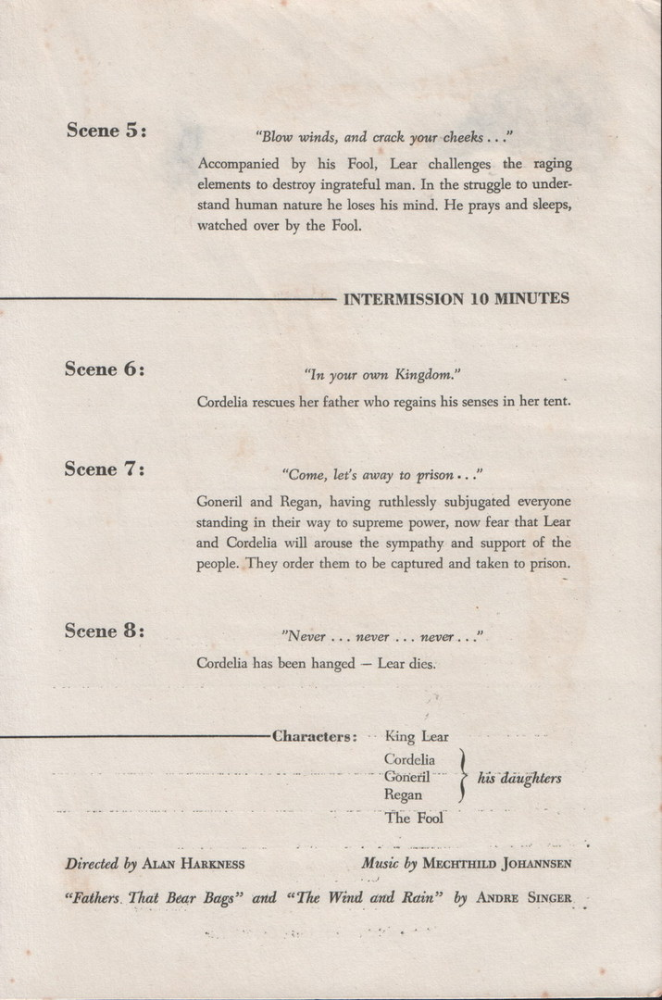
Programme notes: scenes 5–8, and cast Read the clipping text (OCR)
Scene 5: "Blow winds, and crack your cheeks. Accompanied by his Fool, Lear challenges the raging elements to destroy ingrateful man. In the struggle to under- stand human nature he loses his mind. He prays and sleeps, watched over by the Fool. INTERMISSION 10 MINUTES Scene 6: "In your own Kingdom." Cordelia rescues her father who regains his senses in her tent. Scene 7: "Come, let's away to prison. Goneril and Regan, having ruthlessly subjugated everyone standing in their way to supreme power, now fear that Lear and Cordelia will arouse the sympathy and support of the people. They order them to be captured and taken to prison. Scene 8: "Never . .. never ... never. Cordelia has been hanged - Lear dies. - Charaeters: King Lear Cordelia - • Goneril Regan The Fool his daughters Directed by Alan HaRKNesS Music by MecHTHILD JOHANNSEN "Fathers. That Bear Bags" and "The Wind and Rain" by ANDRE SINGER
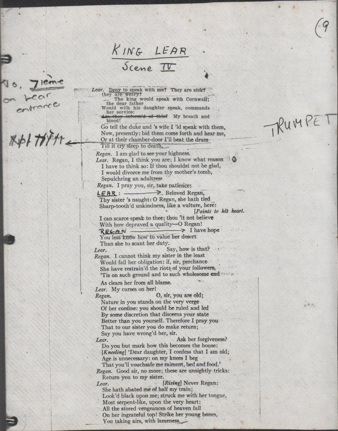
Page from the script: Lear and Regan Read the clipping text (OCR)
16. zieme wear on entrame ※b/カメント KING LEAR Scene TV Lear. Deny to speak with me? They are stek? they are weary? The king would speak with Cornwall; the dear other Wond with his canenter speak. commands her sePara se they inform'd of thie? My breath and blood! Go tell the duke and's wife I 'ld speak with them, Now, presently: bid them come forth and hear me, Or at their chamber-door I'L beat the drum Till it cry steep to death. Regan. Iam glad to see your highness. Lear. Regan, I think you are; I know what reason O I have to think so: If thou shouldst not be glad, I would divorce me from thy mother's tomb, Sepulchring an adultress Regan. I pray you, sir, take patierce: LEAR: ?. Beloved Regan, Thy sister's naught: O Regan, she hath tied Sharp-tooth'd unkindness, like a vulture, here: [Points to his hearl. I can scarce speak to thee; thou 'It not believe With how depraved a quality--O Regan! REGaN > I have hope You less know how to value her desert Than she to scant her duty. Lear. Say, how is that? Regan. I cannot think my sister in the least Would fail her obligation: if, sir, perchance She have restrain'd the riots of your followers, 'Tis on such ground and to such wholesome end s* As clears her from all blame. Lear. My curses on her! Regan. O, sir, you are old; Nature in you stands on the very verge Of her confine: you should be ruled and led By some discretion that discerns your state Better than you yourself. Therefore I pray you That to our sister you do make return; Say you have wrong'd her, sir. Lear. Ask her forgiveness? Do you but mark how this becomes the house: [Kneeling] 'Dear daughter, I confess that I am old; Age is unnecessary: on my knees I beg That you'll vouchsafe me raiment, bed and food.' Regan. Good sir, no more; these are unsightly tricks: Return you to my sister. Lear. (Rising] Never Regan: She hath abated me of half my train; Look'd black upon me; struck me with her tongue, Most serpent-like, upon the very heart: All the stored vengeances of heaven fall On her ingrateful top! Strike her young bones, You taking airs, with lameness, TRUMPET
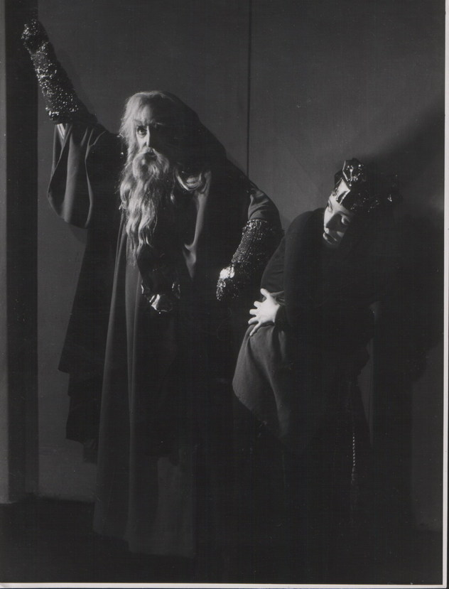
Lear and Regan (Alan Harkness and Mechthild Harkness) 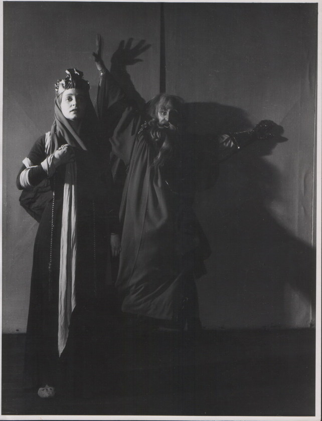
Mechthild Harkness in King Lear 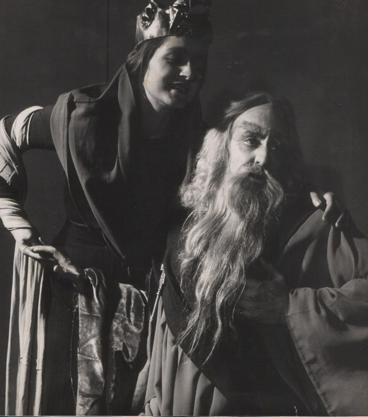
Mechthild Harkness 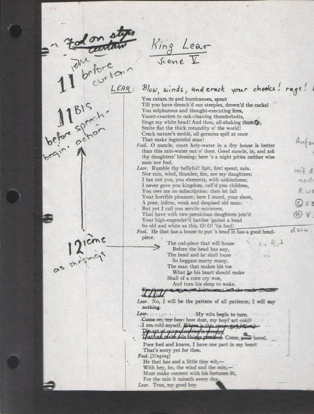
Page from the script: the storm scene (Act III, scene ii) Read the clipping text (OCR)
700.on aunt 11 before King Lear Scene I curtain LEAR: Blow, winds, and crack your cheeks! rage 11BIS before speech - achon begin: You catara-ts and hurricanoes, spout Till you have drench'd our steeples, drown'd the cocks! You sulphurous and thought-executing fires, Vaunt-couriers to oak-cleaving thunderbolts, Singe my white head! And thou, all-shaking thunder, Smite flat the thick rotundity o' the world! Crack nature's molds, all germins spill at once That make ingrateful man! Fool. O nuncle, court holy-water in a dry house is better than this rain-water out o' door. Good nuncle, in, and ask thy daughters' blessing: here's a night pities neither man nor fool. Lear. Rumble thy bellyful! Spit, fire! spout, rain. Nor rain, wind, thunder, fire, are my daughters: I tax not you, you elements, with unkindness; I never gave you kingdom, call'd you children, You owe me no subscription: then let fall Your horrible pleasure; here I stand, your slave, A poor, infirm, weak and despised old man: But yet I call you servile ministers, That have with two pernicious daughters join'd Your high-engender'd battles 'gainst a head So old and white as this, 0! 0! 'tis foul! Fool. He that has a house to put 's head in has a good head- gième as shesingi piece. The cod-piece that will house 5 Before the head has any, The head and he shall louse So beggars marry many. The man that makes his toe What be his beart should mak Shall of a corn cry woe, And turn his sicep to wake. Lear. No, I will be the pattern of all patience; I will say nothing. My wits begin to turn. Come on, my boy: how dost, my boy? art cold? am cold myself. Mine jo this s Poor fool and knave, I have one part in my bea That's sorry yet for tbee. Fool. [Singing] He that has and a little ting Must make content For the rain it raineth Lear. True, my
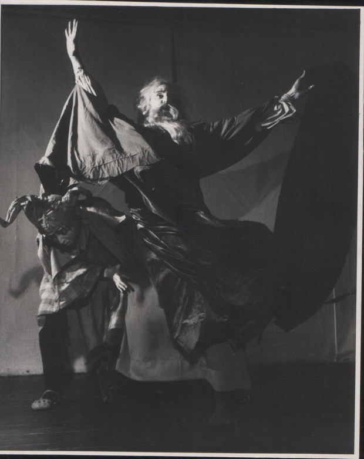
Lear and the Fool 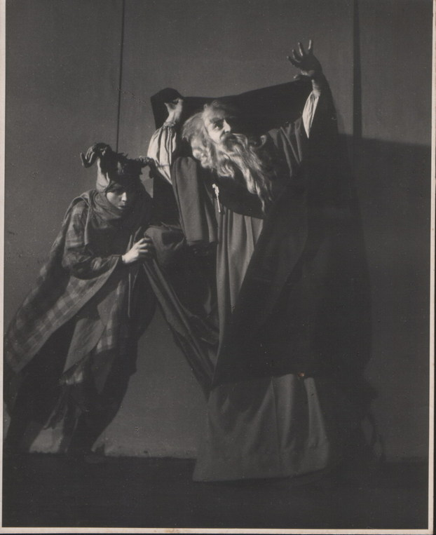
Lear and the Fool 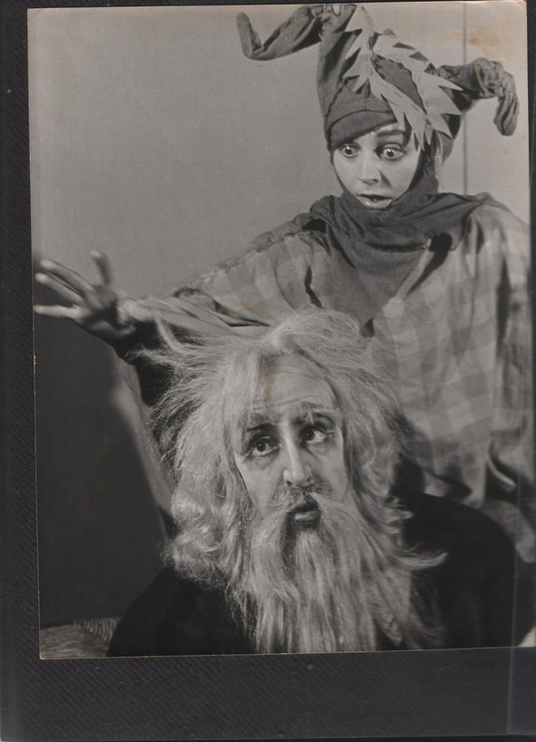
Lear and the Fool
Images from Macbeth
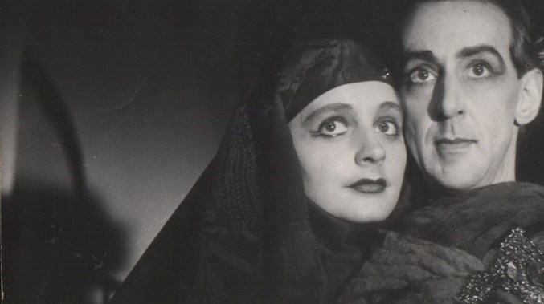
Macbeth 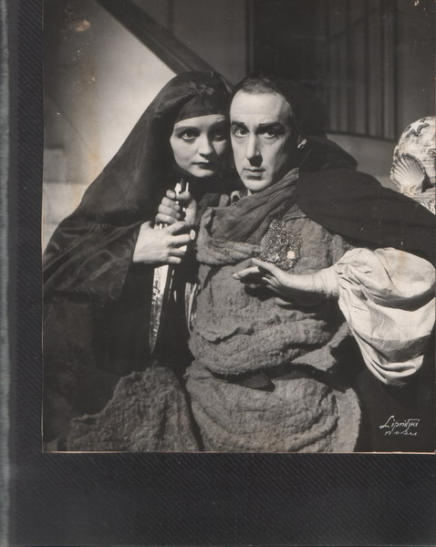
Macbeth 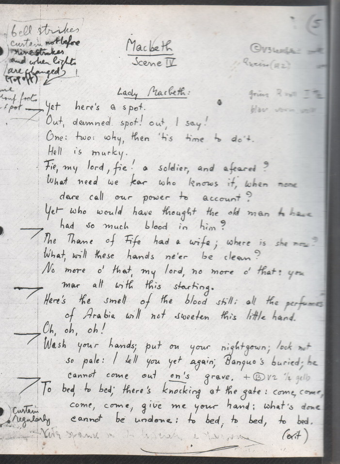
Page from the script: the sleepwalking scene Read the clipping text (OCR)
bell strikes Curts. notlafoe mine strokes li Macketh Scene I Preis (a2) Lady Marketh: Yet here's a spot. Out, denned spot! out I say. One: two: why, then 'tis time to do Hell is murky. Fie, my lord, fie! ! a soldier, and afeared? What need we tear who knows it, when nose dare call our power to account? Yet who would have thought the old man h have had so much blood in him? The Thane of Fife had a wife; where is she What, will these hands ne'er be clean No more a that my lord, no more a that: you mar all with this starting. Here'sthesmel of the blood still: all the perfumes of Arabie will not sweeten this little hand. Oh, oh, oh! Wash your hands; put on your nightgown; lock not so pale: I bell you yet again; Parquo's buried; he cannot come out on's grave, + Bv2 " gell To bed to bed; there's knocking at the gate: come come, Custani come, come, give me your hand: what's done regularly cannot be undone; to bed, to bed, to bed (f)
Programme for the Santa Barbara performance, 1951.
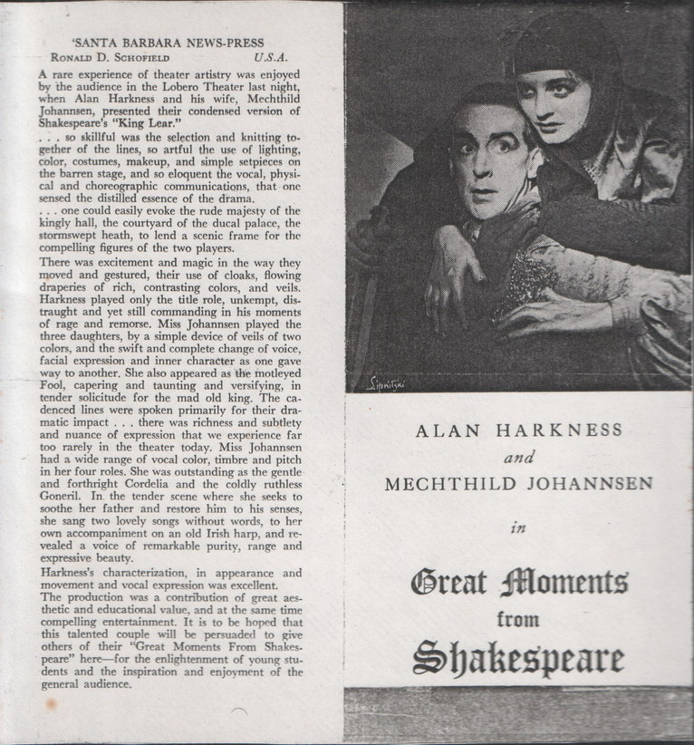
Santa Barbara News-Press review, 1951, by Ronald D. Schofield Read the clipping text (OCR)
'SANTA BARBARA NEWS.PRESS RONALD D. SCHOFIRLD U.S.4. A rare experience of theater artistry was enjoyed by the audience in the Lobero Theater last night, when Alan Harkness and his wife, Mechthild ohannsen, presented their condensed version of Shakespeare's "King Lear." .. so skillful was the selection and knitting to- gether of the lines, so artful the use of lighting, color, costumes, makeup, and simple setpieces on the barren stage, and so eloquent the vocal, physi- cal and choreographic communications, that one sensed the distilled essence of the drama, .. one could easily evoke the rude majesty of the kingly hall, the courtyard of the ducal palace, the stormswept heath, to lend a scenic frame for the compelling figures of the two players. There was excitement and magic in the way they moved and gestured, their use of cloaks, flowing draperies of rich, contrasting colors, and veils. Harkness played only the title role, unkempt, dis- traught and yet still commanding in his moments of rage and remorse. Miss Johannsen played the three daughters, by a simple device of veils of two colors, and the swift and complete change of voice, facial expression and inner character as one gave way to another. She also appeared as the motleyed Fool, capering and taunting and versifying, in tender solicitude for the mad old king. The ca- denced lines were spoken primarily for their dra- matic impact . . . there was richness and subtlety and nuance of expression that we experience far too rarely in the theater today. Miss Johannsen had a wide range of vocal color, timbre and pitch in her four roles. She was outstanding as the gentle and forthright Cordelia and the coldly ruthless Goneril. In. the tender scene where she seeks to soothe her father and restore him to his senses, she sang two lovely songs without words, to her own accompaniment on an old Irish harp, and re- vealed a voice of remarkable purity, range and expressive beauty. Harkness's characterization, in appearance and movement and vocal expression was excellent. The production was a contribution of great aes. thetic and educational value, and at the same time compelling entertainment. It is to be hoped that this talented couple will be persuaded to give others of their "Great Moments From Shakes. peare" here for the enlightenment of young stu dents and the inspiration and enjoyment of the general audience. ALAN HARKNESS and MECHTHILD JOHANNSEN Great Moments from Shakespeare
Review quotes taken from European performances. For further reviews and programs see Reviews and Clippings.
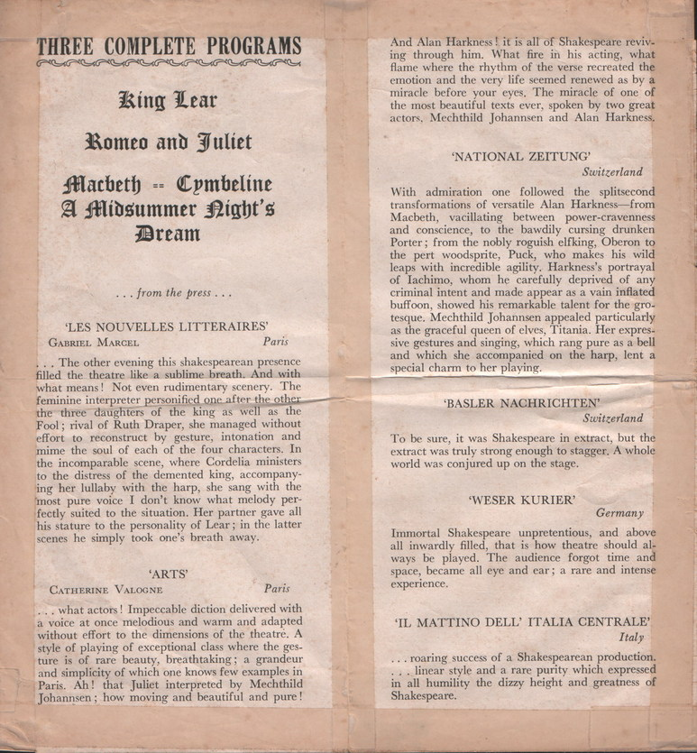
Programme listing three complete programmes, with press quotations from European performances Read the clipping text (OCR)
THREE COMPLETE PROGRAMS king Lear Romeo and Juliet Macbeth = Cymbeline A Midsummer Night's Dream ..from the press .. LES NOUVELLES LITTERAIRES' GABRIEL. MarcEL Paris ... The other evening this shakespearean presence filled the theatre like a sublime breath. And with what means! Not even rudimentary scenery. The effort to reconstruct by gesture, intonation and mime the soul of each of the four characters. In the incomparable scene, where Cordelia ministers to the distress of the demented king, accompany- ing her lullaby with the harp, she sang with the most pure voice I don't know what melody per- fectly suited to the situation. Her partner gave all his stature to the personality of Lear; in the latter scenes he simply took one's breath away. 'ARTS Catherine VALOgNe Paris ...what actors! Impeccable diction delivered with a voice at once melodious and warm and adapted without effort to the dimensions of the theatre. A style of playing of exceptional class where the ges- ture is of rare beauty, breathtaking; a grandeur and simplicity of which one knows few examples in Paris. Ah! that Juliet interpreted by Mechthild Johannsen; how moving and beautiful and pure! And Alan Harkness! it is all of Shakespeare reviv. ing through him. What fire in his acting, what flame where the rhythm of the verse recreated the emotion and the very life seemed renewed as by a miracle before your eyes. The miracle of one of the most beautiful texts ever, spoken by two great actors, Mechthild Johannsen and Alan Harkness, 'NATIONAL ZEITUNG' Switzerland With admiration one followed the splitsecond transformations of versatile Alan Harkness from Macbeth, vacillating between power-cravenness and conscience, to the bawdily cursing drunken Porter; from the nobly roguish elfking, Oberon to the pert woodsprite, Puck, who makes his wild leaps with incredible agility. Markness's portrayal of Tachimo, whom he carefully deprived of any criminal intent and made appear as a vain inflated buffoon, showed his remarkable talent for the gro- tesque. Mechthild Johannsen appealed particularly as the graceful queen of elves, Titania. Her expres. sive gestures and singing, which rang pure as a bell and which she accompanied on the harp, lent a special charm to her playing. 'BASLER NACHRICHTEN' Switzerland To be sure, it was Shakespeare in extract, but the extract was truly strong enough to stagger. A whole world was conjured up on the stage. 'WESER KURIER' Germany Immortal Shakespeare unpretentious, and above all inwardly filled, that is how theatre should al- ways be played. The audience forgot time and space, became all eye and ear; a rare and intense experience 'IL MATTINO DELL' ITALIA CENTRALE' Italy ... roaring success of a Shakespearean production. ... linear style and a rare purity which expressed in all humility the dizzy height and greatness of Shakespeare.